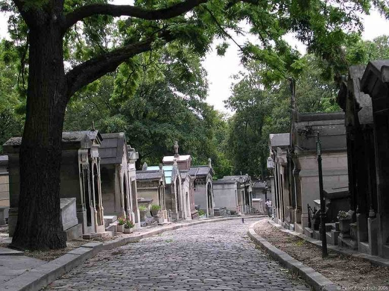
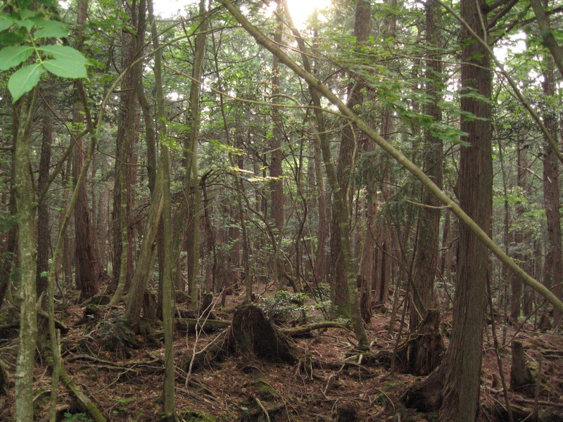
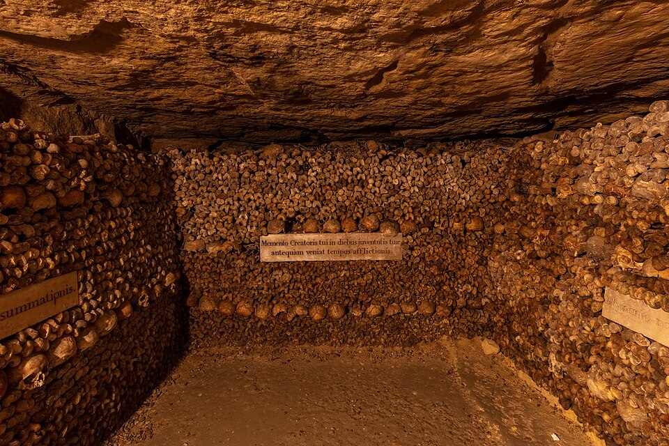
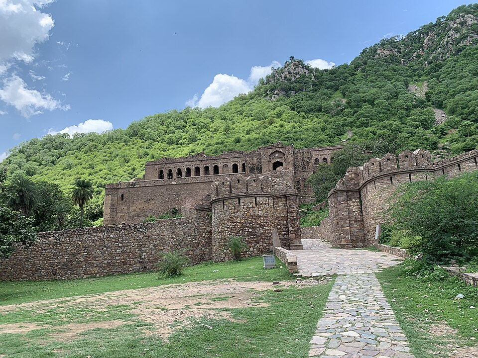
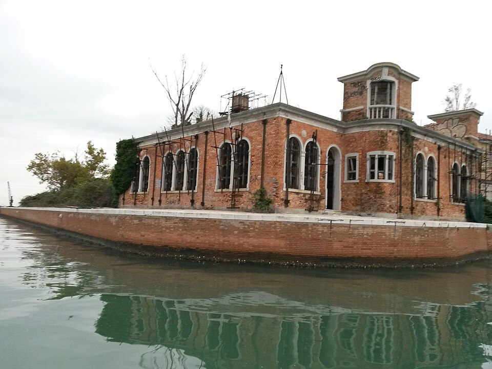

Haunted places around the world
These are few of the creepiest places on earth
Toki's den
Posts
Stories
About
These are few of the creepiest places on earth

Below you can see some of the places' pictures and a brief description.

Aokigahara Forest (Mount Fuji, Japan):as the "Suicide Forest" or "Sea of Trees" this dense, silent forest is notorious for high suicide rates.

Catacombs of Paris (France): A vast underground labyrinth containing the remains of over six million people.

Bhangarh fort is considered to be India's most haunted place. It is a 17th-century old fort built by Man Singh I in Rajasthan.

Poveglia Island (Italy): A small island near Venice that served as a plague quarantine zone and mental hospital; it is considered one of the most haunted places on Earth.
"Do not call up that which you cannot put down."
H.P. Lovecraft